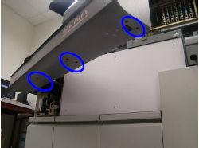
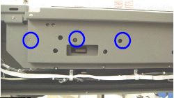
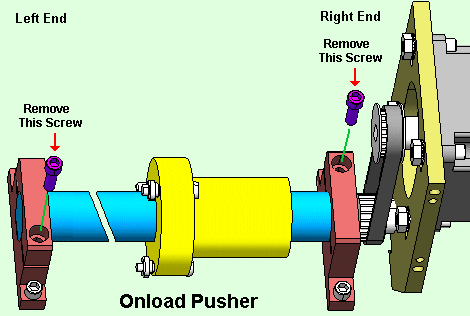
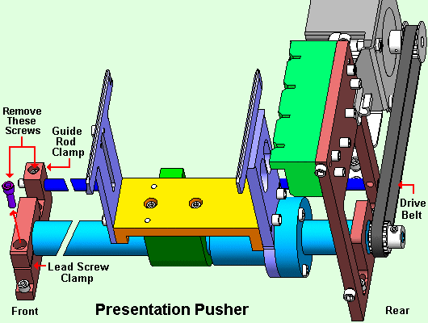

This procedure describes how to replace the lead screw for the on-load pusher or the presentation tray on the SPU.
This procedure describes how to replace the lead screw for the on-load pusher or the presentation tray on the SPU. Perform this procedure when there are unresolvable issues with a lead screw that has:
Intermittent motion errors.
Frequent motion errors.
Caused multiple service calls.
Prepare the instrument.
Open the upper left and right front covers.
Remove power from the motors by using the switch on the Power Distribution PCB labeled "All DC power (except CPU and reagent coolers)".
Open the SPU.
Open the upper left cover of the instrument.
Loosen the locking screw.
The locking screw prevents the SPU from swinging outward from the instrument. It is not necessary to remove the screw because the SPU plate is slotted.
Remove the 3/16-in hex bolt located near the right end of the SPU cover.
Open the lower right access panel on the front of the instrument.
Pull the spring-loaded captive pin that holds the panel (located under the SPU) to the frame.
Grasping the SPU near the right end, swing the right end away from the instrument.
Warning: The SPU off-load area slides forward and rearward as the SPU is swung in and out. To prevent damage to the SPU or the off-load area, confirm that nothing obstructs the movement of the off-load area as the SPU is moved.
(For China and Canada Only.) On the front facing the edge of the Framus assembly, install the Chinese and French labels adjacent to the existing English label.
Note: The labels are in the DxI Installation Kit.
Remove the covers to access the SPU presentation tray.
Remove the lower panel from the SPU.
Remove the eight screws securing the gray skin on the bottom of the SPU.

Remove the one screw securing the gray skin inside the SPU by the on-load pusher.
Note: DxI 600 has three additional screws to be removed.

Slide the skin off the instrument.
Note: A serial cable connects to the skin for the
STAT and
Routine buttons.
Remove the cable connection for the
STAT and
Routine buttons.
Remove the lead screw for the on-load pusher.

Remove the screws from the clamps that hold each end of the lead screw in position (two 9/64-inch hex-screws).
Slide the belt off the pulley at the right end of the lead screw.
Push the lead screw to the right and free it from the left clamp.
Caution: To avoid damaging the circuit panel, watch closely and do not push the lead screw too far to the right.
Pull the lead screw to the left and free it from the right clamp.
It might be necessary to loosen or remove the right clamp to free the lead screw.
Remove the three screws that secure the on-load pusher to the drive nut, and then remove the on-load pusher.
Note: The on-load pusher is reused for the replacement lead screw. Set the pusher and screws aside.
Install the lead screw for the on-load pusher.
Reattach the on-load pusher to the drive nut of the replacement lead screw using the three screws set aside with the on-load pusher.
Slide the right side of the lead screw into the clamp until the left side of the lead screw clears the left clamp.
Slide the left side of the lead screw into the left clamp.
Slide the drive belt back onto the pulley.
Manually move the on-load pusher back to the home sensor (far right), while holding the lead screw in position.
Remove the spring holding the interlock lever.
Removing the spring removes pressure from the on-load pusher. The spring will be reinstalled after securing the lead screw.
Adjust the lead screw so that the on-load pusher is in the center of the home sensor.
Secure the screw in the right clamp and tighten it.
Confirm that the cover on the lead screw is flush with the right side of the clamp.
Reattach the spring to the interlock lever.
Secure the screw in the left clamp and tighten it.
Remove the lead screw for the presentation tray.

Remove the black plate covering the presentation gate base bracket.
Loosen the two screws securing the linkage gate to the presentation tray.
Slide the pin to the side and remove the gate linkage end.
Note: Do not lose the pin.
Remove the two screws (9/64-in hex screws) that secure the gate linkage base bracket into place.
Remove the base bracket and gate, along with the gate linkage.
Slide the drive belt off the pulley at the rear of the lead screw.
Remove the screw from the front clamp.
Slide the lead screw through the rear clamp and free the lead screw from the front clamp.
Remove the screw that secures the guide rod in the front clamp.
Remove the guide rod and discard it.
The guide rod is not used with the replacement lead screw.
Remove the two screws that secure the front clamp to the base plate, and then remove the clamp.
Remove the lead screw from the instrument.
Remove the three screws that secure the presentation tray to the drive nut.
Note: The presentation tray is reused for the replacement lead screw. Set the tray and screws aside.
Install the lead screw for the presentation tray.
Attach the presentation tray to the drive nut of the replacement lead screw using the three screws set aside with the presentation tray.
Slide the replacement lead screw into the rear clamp.
Reattach the front clamp.
Manually move the presentation tray to align the rails on the presentation tray with the rails on the SPU.
Secure the screw in the front clamp and tighten it.
Confirm that the cover on the lead screw is flush with the front surface of the clamp. Hold the presentation tray in the aligned position while tightening the clamp.
Manually move the presentation tray to the rear and verify that the flag does not rub on the rear sensor.
Slide the drive belt onto the pulley.
Attach the bracket, gate, and gate linkage.
Place the end of the gate linkage that attaches to the presentation tray into position, and slide the pin into position.
Tighten the two screws that secure the gate linkage to the presentation tray.
Reattach the black plate covering the presentation gate bracket.
Replace the covers after accessing the SPU presentation tray.
Connect the ribbon cable for the
STAT and
Routine buttons.
Slide the skin on the instrument.
Replace the eight screws securing the gray skin on the bottom of the SPU.
Replace the one screw securing the gray skin inside the SPU.
Replace the lower panel from the SPU.
Close the SPU.
The SPU is hinged on the left side. The right side is released and can be swung out from the instrument to approximately 45 degrees.
Warning: The SPU off-load area slides forward and rearward as the SPU is swung in and out. To prevent damage to the SPU or the off-load area, confirm that nothing obstructs the movement of the off-load area as the SPU is moved.
Grasping the SPU near the right end, swing the right end toward the instrument.
Pull the spring-loaded captive pin to attach the panel (located under the SPU) to the frame.
Close the lower right access panel on the front of the instrument.
Insert the 3/16-in hex bolt.
Tighten the bolt that holds the SPU from swinging outward from the instrument (locking screw).
Close the upper left cover of the instrument.
Note: Initialize the instrument after opening and closing the SPU, because a switch is actuated when the SPU is opened.
Verify the operation of the SPU.
Power on the upper switch on the Power Distribution PCB.
Load 15 racks and verify the movement of the racks through the presentation tray. During this operation, select the
Routine Load button and load another ten racks to verify that the ribbon cable for the
STAT and
Routine buttons is functioning.
Perform QC and verify that customer specifications are met.
Verify system operation.
Perform system verification as stated in the Verification of Service Repair document .


 Note: DxI 600 has three additional screws to be removed.
Note: DxI 600 has three additional screws to be removed.